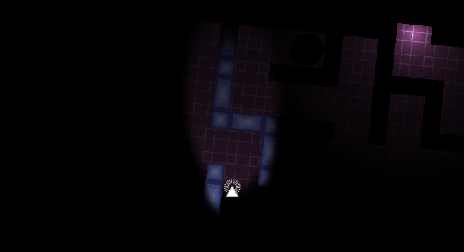
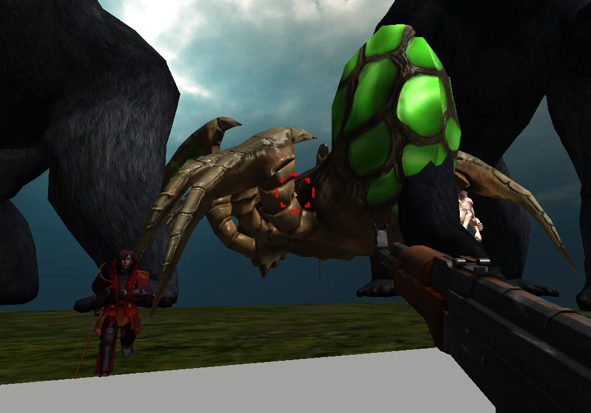
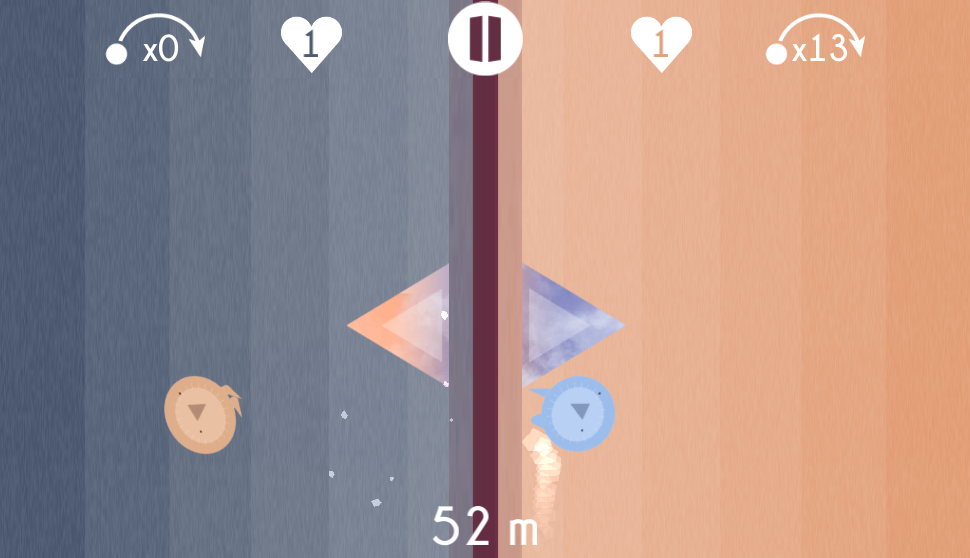

Crazy MinerA procedural arcade game developped for Gameloft.
Mathieu BéduProgrammationGame Design |
Célia BétournéGraphics |
Lucas MaupinSound DesignGame Design |
Inès RobinGraphics |
Thibault TroalenGame DesignProgrammation |
Crazy Miner is a game developped on touchpad in which a minor must blast blocks to find precious minerals. Gameloft has asked that a game phase lasts exactly 157 seconds